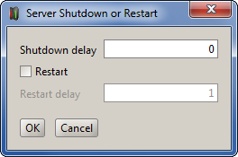

What does the sample do?
This demo illustrates a JPPF grid failover mechanism which ensures that a JPPF driver is not a single point of failure.How does it work?
The failover mechanism relies on two main components:- the nodes have a specific node connection strategy
which handles an ordered list of drivers to connect to, as follows:
- the first driver in the list is considered the primary driver, all others are backups in case the primary goes down
- when initially connecting or reconnecting due to a mangement request, the node attemps to connect to the first (highest priority) driver in the list, then goes down the list if the driver is not online
- when reconnecting due to a disconnection from the driver, the node goes down the list of drivers, rolling back to the top when the end of the list is reached
- a JPPF client is used as a controller, to detect when a driver is back up after going down, and decide whether it is the new primary and force the nodes to reconnect to it.
This client is used as follows:
- it is configured to connect to the same drivers as provided to the nodes. Each configured driver has a priority in descending order of the list given to the nodes
- for each driver connection, a connection status listener is registered
- the listener detects situations when the primary driver goes down or gets back up and determines which dfriver is the current primary
- when a new primary driver goes back up, the listener issues a management request to force the nodes to reconnect, once they complete their remaining tasks
How do I run it?
- Before running this sample application, you must have at least two JPPF servers running.
For information on how to set up a node and server, please refer to the JPPF documentation. - Update the drivers definition file to reflect the information on your JPPF servers
- build the sample with this command: mvn clean install. This will create a file named GridFailover.zip in the target folder
- configure a node to use the driver discovery:
- unzip the GridFailover.zip file into the root installation directory of a node. It will copy the required libraries into the node's /lib directory, and the drivers.yaml file in the node's root installation directory.
- in a text editor, open the node's configuration file located at <node_install_root>/config/jppf-node.properties and add this line:
jppf.server.connection.strategy = org.jppf.example.gridfailover.NodeSideDiscovery - start the node: ./startNode.sh or startNode.bat
- configure an administration console to use the driver discovery:
- unzip the GridFailover.zip file into the root installation directory of an adminsitration console. It will copy the required libraries into the console's /lib directory, and the drivers.yaml file in the console's root installation directory.
- in a text editor, open the admin console's configuration file located at <console_install_root>/config/jppf-gui.properties and add this line:
jppf.remote.execution.enabled = false
this will disable the default built-in discovery mechanism, such that only our custom one is used - the client-side discovery auto-installs through the Service Provider Interface (SPI), thus no configuration update is needed for this
- start the admin console: ./startConsole.sh or startConsole.bat
- once started, the admin console should show the drivers defined in the drivers.yaml file, along with a node connected to the first driver in the list
- from this sample's root directory, start the sample grid controller: ./run.sh or run.bat.
The console output will show something similar to this:
client process id: 37556, uuid: A9619789-6E4B-4DA9-B267-FC014A811275 press [Enter] to exit discovered new driver: ClientConnectionPoolInfo[name=primary, secure=false, host=localhost, port=11111, priority=2, poolSize=1, jmxPoolSize=1, heartbeatEnabled=false, maxJobs=2147483647] discovered new driver: ClientConnectionPoolInfo[name=backup, secure=false, host=localhost, port=11112, priority=1, poolSize=1, jmxPoolSize=1, heartbeatEnabled=false, maxJobs=2147483647] [client: primary-1 - ClassServer] Attempting connection to the class server at localhost:11111 [client: backup-1 - ClassServer] Attempting connection to the class server at localhost:11112 [client: backup-1 - ClassServer] Reconnected to the class server [client: primary-1 - ClassServer] Reconnected to the class server [client: primary-1 - TasksServer] Attempting connection to the task server at localhost:11111 [client: backup-1 - TasksServer] Attempting connection to the task server at localhost:11112 [client: primary-1 - TasksServer] Reconnected to the JPPF task server [client: backup-1 - TasksServer] Reconnected to the JPPF task server
- shutdown the primary server:
- in the administration console's "Tree view", select the driver to which a node is connected
- click on the "Server restart or shutdown" button (
 )
) - in the displayed dialog, enter "0" for the "Shutdown delay" and uncheck the "Restart" checkbox:
 - click the "Ok" button to terminate the server
- you will notice that the node reconnects to the "backup" server
- now start the terminated server again
- observe how the node disconnects from the backup server and reconnects to the one that was just restarted
Related source files
- NodeSideDiscovery.java : the node connection strategy
- ClientSideDiscovery.java : the client-side driver discovery plugin
- ConnectionListener.java : the grid topology monitor and controller, which detects when a primary driver comes back online and forces the node to reconnect to this driver
- Utils.java : utilities to parse the YAML drivers definition file
- drivers.yaml : the jppf drivers defintion file, in YAML format
- jppf.properties : the jppf client configuration file
I have additional questions and comments, where can I go?
There are 2 privileged places you can go to: